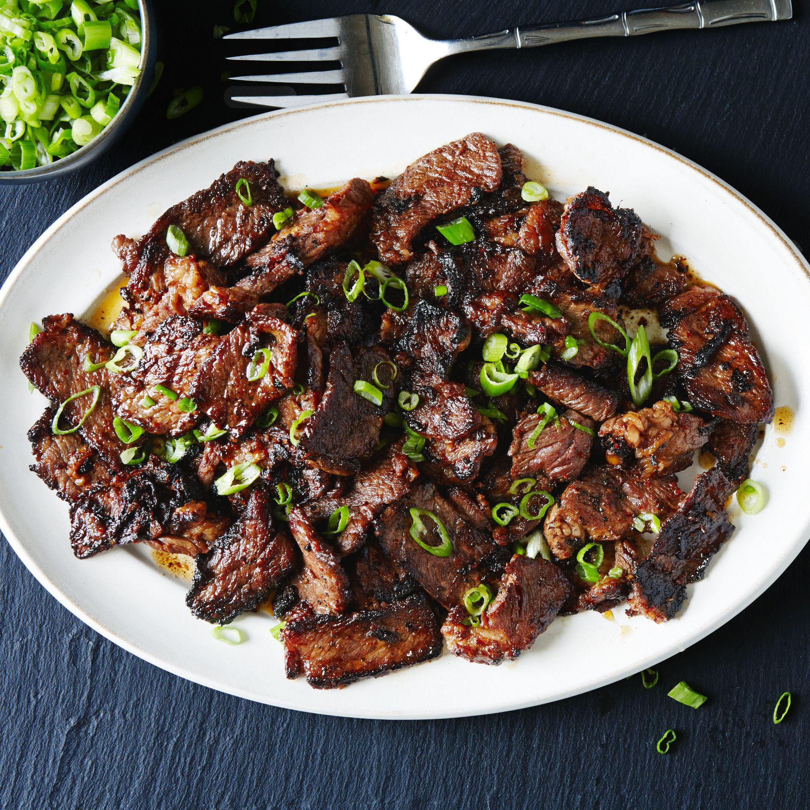

Bulgogi

Sweet Korean bulgogi topped with green onions.
Description
Bulgogi is a sweet beef dinner originating from South Korea.
Ingredients
The ingredients needed to make Bulgogi are:
- 1 pound of marbled, very thin shaved steak
- 1/4 grated pear
- 1 tablespoon grated and peeled ginger
- 1 grated clove of garlic
- 1 tablespoon of brown sugar
- 1 tablespoon sesame oil
- 2 tablespoons of soy sauce
- 2 tablespoons of vegetable oil
- About 2 sliced green onions for topping.
Steps
- Combine grated pear, ginger, garlic, brown sugar, sesame oil, and soy sauce in a large bowl.
- Cut the shaved steak into narrow slices and add it to bowl. Thoroughly coat the shaved steak in the marinade.
- Cover bowl with plastic wrap and let it sit in fridge for thirty minutes.
- With one tablespoon of vegetable oil, coat a skillet. When the vegetable oil begins to shimmer, add half a pound of the meat.
- Move meat around with tongs until cooked, then place on plate.
- Repeat with the other half of remaining meat.
- Top with green onions and sesame seeds and serve with rice and Romaine lettuce leaves, or serve plain.